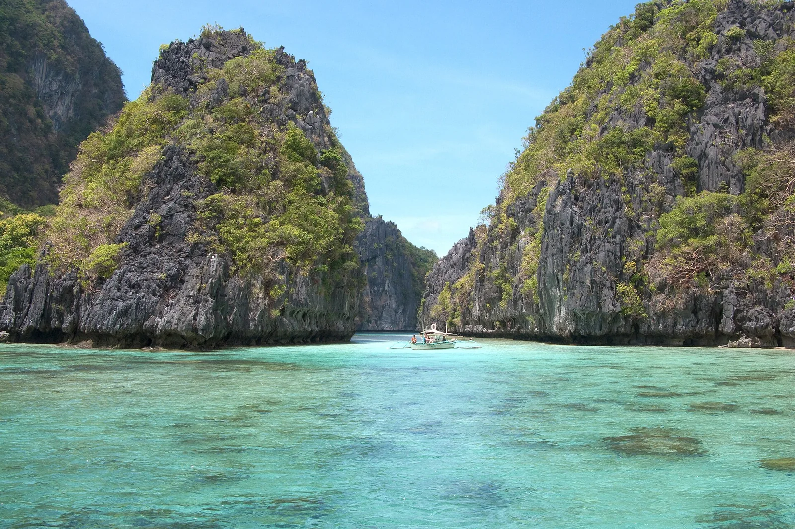

El Nido
Palawan, Philippines · kayak, snorkeling, plongée

Au nord de Palawan, El Nido ouvre sur l’archipel de Bacuit. Les falaises calcaires, les baies et les lagons se découvrent notamment lors de sorties en bateau, en kayak ou avec masque et tuba.
- Lieu
- Palawan, Philippines
- Niveau
- Variable selon les conditions
- Activités
- kayak, snorkeling, plongée
- Type d'eau
- Mer / océan
- Coordonnées
- 11.18, 119.39 (position approximative du secteur)
Ouvrir dans Ocean Buddy Télécharger sur l'App Store
Source : Wikipédia · géographie du lieu.